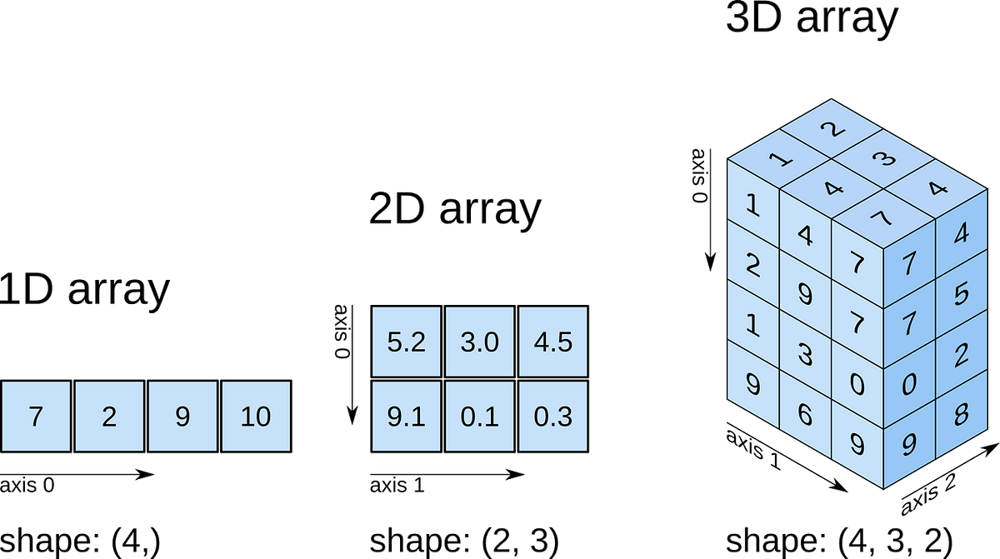

8. Numpy
8.1. Cơ bản về numpy
Numpy là viết tắt của Numerical Python, là một thư viện hỗ trợ tính toán trong Python cho phép xây dựng và tính toán dữ liệu dạng ma trận (array) và các phép tính tính toán học.
Array là một mảng dữ liệu có thể có 1 hoặc nhiều chiều như sau
[1]:
import numpy as np
# Mảng 1 chiều
one_array = list(range(0, 10))
one_array
[1]:
[0, 1, 2, 3, 4, 5, 6, 7, 8, 9]
[2]:
type(one_array)
[2]:
list
[3]:
type(one_array[0])
[3]:
int
Chuyển từ list của Python object thành array
[4]:
new_array = np.array(range(0, 10))
new_array
[4]:
array([0, 1, 2, 3, 4, 5, 6, 7, 8, 9])
[5]:
type(new_array)
[5]:
numpy.ndarray
Lưu ý: Khi làm việc với các dữ liệu dạng vector như R, ta cần chuyển định dạng list thành dạng np.array
8.2. Tạo array cơ bản
[6]:
# Tạo array zero
np.zeros(10, dtype = int)
[6]:
array([0, 0, 0, 0, 0, 0, 0, 0, 0, 0])
[7]:
# Tạo array 1
np.ones((2,3), dtype = float)
[7]:
array([[1., 1., 1.],
[1., 1., 1.]])
Lưu ý: dtype là viết tắt của data type object - quy định kiểu cấu trúc dữ liệu trong array
[8]:
# Tạo array 2x3 có giá trị 3.14
[9]:
np.full((2,3), 3.14)
[9]:
array([[3.14, 3.14, 3.14],
[3.14, 3.14, 3.14]])
[10]:
# Chuỗi từ 2:20
np.arange(2,20, 2)
[10]:
array([ 2, 4, 6, 8, 10, 12, 14, 16, 18])
[11]:
# Array 3x3 giá trị random trong khoảng 0,1 (uniform distribution)
np.random.random((3,3))
[11]:
array([[0.55873045, 0.17101057, 0.864648 ],
[0.11256483, 0.59552714, 0.2146484 ],
[0.64488892, 0.70919041, 0.34403623]])
[12]:
# Random theo phân phối chuẩn
np.random.normal(0,1, 100)
[12]:
array([ 0.76025825, -1.57825439, -1.38003726, 0.81866305, 0.30683283,
0.91609823, -0.28262441, 0.0831453 , 0.07946278, -0.83933616,
-0.85323391, 1.38111961, -0.3100797 , -0.93036297, 1.01950134,
1.43045853, -0.94779552, -0.69448328, -1.44346081, 1.40828162,
0.5429329 , 0.44732211, 1.00303219, -0.57363001, -0.09862848,
-0.67667372, -1.94827157, -0.7656969 , 0.38564589, 1.29107981,
0.13908446, 2.00214063, 0.85992258, 0.14703325, 1.16544076,
0.36473788, 1.11848992, -2.58151903, 0.38248601, 1.52176957,
0.54143324, -1.51787563, 0.8095043 , -0.28132862, -1.20142799,
-0.96373088, 0.31622672, -0.510379 , -0.60201529, -0.16995291,
-0.10727428, 0.99455544, 1.43689838, 0.06690922, -0.61890555,
0.21505744, 0.85106305, 0.76291652, 1.43366877, 0.12512296,
-0.41927812, -2.2809709 , 0.30413348, 0.93702947, -0.57308665,
-1.2016411 , 0.15650302, -0.50422508, 1.53851802, -0.36468095,
-0.24456951, 0.49703849, 0.62333574, -1.39376727, -0.11425637,
-0.73034035, 1.18340278, -0.27851846, -0.05402435, -0.30502632,
0.74238418, 0.97476529, 0.28831737, -0.92192898, 0.54406568,
1.54547819, -0.29429902, -0.88713068, 1.22261824, -1.00247142,
0.73288417, 0.10953587, -0.5792053 , 0.93041617, -0.72188136,
-0.52031037, -1.66368144, 1.77244174, -1.37504546, 0.94003123])
[13]:
# Random integer
np.random.randint(1, 10, (3,3))
[13]:
array([[1, 9, 8],
[5, 6, 2],
[8, 2, 2]])
[14]:
# Chia vector từ 0-5 thành 50 phần bằng nhau
np.linspace(0,5,50)
[14]:
array([0. , 0.10204082, 0.20408163, 0.30612245, 0.40816327,
0.51020408, 0.6122449 , 0.71428571, 0.81632653, 0.91836735,
1.02040816, 1.12244898, 1.2244898 , 1.32653061, 1.42857143,
1.53061224, 1.63265306, 1.73469388, 1.83673469, 1.93877551,
2.04081633, 2.14285714, 2.24489796, 2.34693878, 2.44897959,
2.55102041, 2.65306122, 2.75510204, 2.85714286, 2.95918367,
3.06122449, 3.16326531, 3.26530612, 3.36734694, 3.46938776,
3.57142857, 3.67346939, 3.7755102 , 3.87755102, 3.97959184,
4.08163265, 4.18367347, 4.28571429, 4.3877551 , 4.48979592,
4.59183673, 4.69387755, 4.79591837, 4.89795918, 5. ])
8.3. Các thuộc tính của array
Array có 3 thuộc tính sau: - ndim: Số lượng chiều trong mảng - shape: Chi tiết chiều trong mảng - size: Số lượng phần tử trong mảng
[15]:
import numpy as np
L1 = np.random.randint(10, size = (6))
L2 = np.random.normal(0, 1, size = (2,3))
L3 = np.random.normal(0, 1, size = (2,3,4))
L1
L2
L3
[15]:
array([[[ 0.06970451, -0.26288793, -0.01117305, -1.24629867],
[-0.55028247, -0.12324752, 2.20743936, 3.19588393],
[ 0.02587897, -1.44135126, 0.43530432, 1.89462402]],
[[-0.8051924 , -0.60224133, 0.6006951 , 0.72837807],
[ 0.10179396, 1.47488236, -0.86162609, -1.31272577],
[ 1.08814531, -0.92716925, 0.54080284, 0.6210672 ]]])
[16]:
L1
[16]:
array([6, 2, 7, 0, 1, 8])
[17]:
L1.ndim
[17]:
1
[18]:
L2.shape
[18]:
(2, 3)
[19]:
L3.size
[19]:
24
Lưu ý: Trong Python, khi các thuộc tính của object, ta sử dụng không có dấu (), với hàm, ta sử dụng dấu ()
8.4. Trích xuất dữ liệu trong array
Trong array của numpy, ta chiết xuất dữ liệu tương tự như R. Tuy nhiên, do Python đánh số index từ 0 nên cần lưu ý.
[20]:
my_array = np.random.randint(10, size = (3,3))
[21]:
my_array
[21]:
array([[8, 5, 0],
[9, 2, 7],
[2, 0, 6]])
[22]:
my_array[0, 1]
[22]:
5
[23]:
my_array[1, 0]
[23]:
9
[24]:
my_array[2,1]
[24]:
0
8.4.1. Chiết xuất array theo chuỗi
[25]:
x = np.arange(1, 10)
[26]:
x
[26]:
array([1, 2, 3, 4, 5, 6, 7, 8, 9])
Lưu ý: Khi sử dụng arange trong numpy, chuỗi sẽ được thể hiện dạng [a, b)
[27]:
x[:5] #5 thành phần đầu tiên
[27]:
array([1, 2, 3, 4, 5])
[28]:
x[2:5] # Vị trí 3,4,5
[28]:
array([3, 4, 5])
[29]:
x[5:] # Tất cả các thành phần sau vị trí 5
[29]:
array([6, 7, 8, 9])
[30]:
x[::2] # Các thành phần ở vị trị lẻ
[30]:
array([1, 3, 5, 7, 9])
[31]:
x[::3] # Các thành phần cách nhau 3 chỉ số
[31]:
array([1, 4, 7])
[32]:
x[1::2] # Các thành phần ở vị trí lẻ, bắt đầu từ số 2
[32]:
array([2, 4, 6, 8])
8.5. Thay đổi chiều trong array
Sử dụng phương pháp reshape()
[33]:
x = np.arange(1, 10)
[34]:
type(np.array([1, 10]))
[34]:
numpy.ndarray
[35]:
x
[35]:
array([1, 2, 3, 4, 5, 6, 7, 8, 9])
[36]:
x.reshape(3,3)
[36]:
array([[1, 2, 3],
[4, 5, 6],
[7, 8, 9]])
8.6. Fancy index
Ý tưởng của fancy index là sử dụng các vị trí trong array cũ để tạo array mới, trong khi đó, chiều của array mới được tạo thành từ fancy index
[37]:
x = np.arange(1, 10)
x
[37]:
array([1, 2, 3, 4, 5, 6, 7, 8, 9])
[38]:
fancy_index = np.array([[0,2], [7,4]])
fancy_index
[38]:
array([[0, 2],
[7, 4]])
[39]:
x[fancy_index]
[39]:
array([[1, 3],
[8, 5]])
8.7. Các phép toán trong array
[40]:
# Sort
x = np.array([1,3,2,9,6])
[41]:
np.sort(x)
[41]:
array([1, 2, 3, 6, 9])
[42]:
# Sort với mảng hai chiều
y = np.random.randint(1,10, size = (3,3))
[43]:
y
[43]:
array([[9, 3, 9],
[2, 9, 1],
[1, 9, 6]])
[44]:
np.sort(y, axis = 0) # Sort theo cột
[44]:
array([[1, 3, 1],
[2, 9, 6],
[9, 9, 9]])
[45]:
np.sort(y, axis = 1) # Sort theo dòng
[45]:
array([[3, 9, 9],
[1, 2, 9],
[1, 6, 9]])
8.8. Các phép toán cơ bản trong numpy
Numpy có chứa các hàm tính toán toán học mà các thư viện mặc định của python không có. Ta có thể sử dụng như sau
[46]:
x = np.random.normal(10, 2, 10)
x
[46]:
array([ 9.06661188, 6.62068848, 11.29608551, 5.61416346, 10.73621897,
9.81364447, 11.8802057 , 9.76555625, 12.62739733, 10.74900392])
[47]:
# Bình phương
np.square(x)
[47]:
array([ 82.20345102, 43.83351597, 127.60154784, 31.51883137,
115.26639783, 96.30761769, 141.13928748, 95.36608879,
159.45116344, 115.54108533])
[48]:
# Căn bậc 2
np.sqrt(x)
[48]:
array([3.01108151, 2.57306986, 3.36096497, 2.3694226 , 3.276617 ,
3.13267369, 3.44676743, 3.124989 , 3.55350494, 3.27856736])
[49]:
# log
np.log(x)
[49]:
array([2.20459864, 1.89019936, 2.42445625, 1.72529259, 2.37362298,
2.28377371, 2.47487363, 2.27886153, 2.53586885, 2.37481309])
[50]:
# Cộng thêm các giá trị
x + 100
[50]:
array([109.06661188, 106.62068848, 111.29608551, 105.61416346,
110.73621897, 109.81364447, 111.8802057 , 109.76555625,
112.62739733, 110.74900392])
8.9. Biến đổi từ dataframe sang array
Các phép toán ứng dụng của machine learning chủ yếu làm việc với array. Trong khi đó, cấu trúc dữ liệu cơ bản khi làm việc về phân tích và khám phá dữ liệu lại là pd.DataFrame và pd.Series. Do đó, cần phải thành thạo việc biến đổi qua lại các kiểu dữ liệu trên
8.9.1. List sang array
[51]:
my_list = [1,2,3,4]
[52]:
type(my_list)
[52]:
list
[53]:
# Biến đổi sang array
np.array(my_list)
[53]:
array([1, 2, 3, 4])
8.9.2. Series & DataFrame sang array
[54]:
import pandas as pd
my_df = pd.DataFrame({
'x' : [1,2,3],
'y' : ['a', 'b', 'c']
})
my_df
[54]:
| x | y | |
|---|---|---|
| 0 | 1 | a |
| 1 | 2 | b |
| 2 | 3 | c |
[55]:
# DF sang array
my_df.values
[55]:
array([[1, 'a'],
[2, 'b'],
[3, 'c']], dtype=object)
[56]:
type(my_df.values)
[56]:
numpy.ndarray
[57]:
new_array = my_df.values
new_array.shape
[57]:
(3, 2)
[58]:
# Series sang array
series_array = my_df['x'].values
[59]:
series_array.shape
[59]:
(3,)
Lưu ý: Khi chuyển từ dạng Series sang array sẽ tạo thành 1 array 1 chiều. Do đó, khi làm việc với các thuật toán trong sklearn cần biến đổi shape để trở thành array dạng (n, 1)
[60]:
series_array.reshape(3, 1).shape
[60]:
(3, 1)